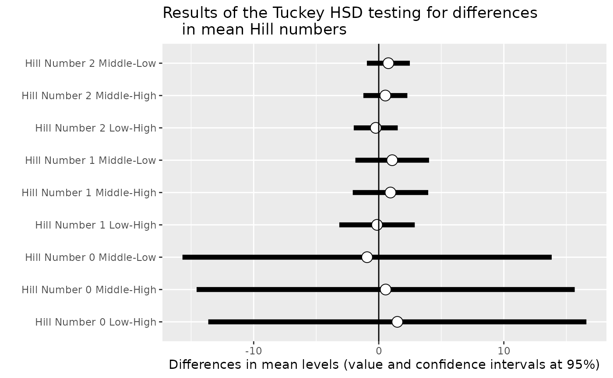

library(MiscMetabar)
data(data_fungi)Alpha diversity
Hill number
Numerous metrics of diversity exist. Hill numbers 1 is a kind of general framework for alpha diversity index.
renyi_res <- vegan::renyi(data_fungi@otu_table)
head(renyi_res)
#> 0 0.25 0.5 1 2
#> A10-005-B_S188_MERGED.fastq.gz 4.204693 3.615323 3.044244 2.0754183 1.1561862
#> A10-005-H_S189_MERGED.fastq.gz 4.248495 3.150337 2.063712 0.9938545 0.6464533
#> A10-005-M_S190_MERGED.fastq.gz 3.988984 3.607773 3.308361 2.9304156 2.5781603
#> A12-007_S191_MERGED.fastq.gz 5.036953 4.423283 3.751946 2.6309045 1.8468497
#> A12-007-B_S2_MERGED.fastq.gz 3.850148 3.349461 2.874269 2.1881145 1.6533262
#> A15-004_S3_MERGED.fastq.gz 4.025352 3.890614 3.747555 3.4533352 2.9618789
#> 4 8 16 32
#> A10-005-B_S188_MERGED.fastq.gz 0.8007816 0.6864775 0.6407124 0.6200442
#> A10-005-H_S189_MERGED.fastq.gz 0.5146170 0.4469617 0.4172228 0.4037640
#> A10-005-M_S190_MERGED.fastq.gz 2.3022639 2.1015018 1.9744485 1.9110311
#> A12-007_S191_MERGED.fastq.gz 1.5920328 1.4947479 1.4421368 1.4109287
#> A12-007-B_S2_MERGED.fastq.gz 1.3979355 1.2774402 1.2106906 1.1733049
#> A15-004_S3_MERGED.fastq.gz 2.4997916 2.2378349 2.1045646 2.0377518
#> 64 Inf
#> A10-005-B_S188_MERGED.fastq.gz 0.6102022 0.6006678
#> A10-005-H_S189_MERGED.fastq.gz 0.3973550 0.3911464
#> A10-005-M_S190_MERGED.fastq.gz 1.8806976 1.8513117
#> A12-007_S191_MERGED.fastq.gz 1.3916365 1.3700776
#> A12-007-B_S2_MERGED.fastq.gz 1.1547034 1.1366612
#> A15-004_S3_MERGED.fastq.gz 2.0054156 1.9740810Test for difference in diversity (hill number)
One way to keep into account for difference in the number of sequences per samples is to use a Tukey test on a linear model with the square roots of the number of sequence as the first explanatory variable of the linear model 2.
p <- MiscMetabar::hill_pq(data_fungi, variable = "Height")
#> Taxa are now in rows.
#> Cleaning suppress 0 taxa and 0 samples.
#> Cleaning suppress 0 taxa and 0 samples.
p$plot_Hill_0
Hill number 1
p$plot_tuckey

Result of the Tuckey post-hoc test
See also the tutorial of the microbiome package for an alternative using the non-parametric Kolmogorov-Smirnov test for two-group comparisons when there are no relevant covariates.
Alpha diversity using package MicrobiotaProcess
library("MicrobiotaProcess")
#> MicrobiotaProcess v1.12.2 For help:
#> https://github.com/YuLab-SMU/MicrobiotaProcess/issues
#>
#> If you use MicrobiotaProcess in published research, please cite the
#> paper:
#>
#> Shuangbin Xu, Li Zhan, Wenli Tang, Qianwen Wang, Zehan Dai, Lang Zhou,
#> Tingze Feng, Meijun Chen, Tianzhi Wu, Erqiang Hu, Guangchuang Yu.
#> MicrobiotaProcess: A comprehensive R package for deep mining
#> microbiome. The Innovation. 2023, 4(2):100388. doi:
#> 10.1016/j.xinn.2023.100388
#>
#> Export the citation to BibTex by citation('MicrobiotaProcess')
#>
#> This message can be suppressed by:
#> suppressPackageStartupMessages(library(MicrobiotaProcess))
#>
#> Attaching package: 'MicrobiotaProcess'
#> The following object is masked from 'package:phyloseq':
#>
#> tax_table
#> The following object is masked from 'package:stats':
#>
#> filter
clean_pq(subset_samples_pq(data_fungi, !is.na(data_fungi@sam_data$Height))) %>% as.MPSE() %>% mp_cal_alpha() %>% mp_plot_alpha(.group = "Height")
#> Cleaning suppress 144 taxa and 0 samples.
#> The rarefied abundance of species might not be provided. Rarefaction of all
#> observations is performed automatically using 'Abundance' column. If you
#> still want to calculate the alpha index with the specified '.abundance', you
#> can set 'force=TRUE'.
#> Warning in wilcox.test.default(c(4, 4, 5, 5, 4, 4, 3, 6, 3, 4, 3, 2, 3, :
#> cannot compute exact p-value with ties
#> Warning in wilcox.test.default(c(3, 4, 3, 5, 4, 6, 3, 5, 4, 4, 3, 3, 3, :
#> cannot compute exact p-value with ties
#> Warning in wilcox.test.default(c(3, 4, 3, 5, 4, 6, 3, 5, 4, 4, 3, 3, 3, :
#> cannot compute exact p-value with ties
#> Warning in wilcox.test.default(c(1.32966134885476, 1.242453324894,
#> 1.56071040904141, : cannot compute exact p-value with ties
#> Warning in wilcox.test.default(c(0.867563228481461, 1.32966134885476,
#> 0.867563228481461, : cannot compute exact p-value with ties
#> Warning in wilcox.test.default(c(0.867563228481461, 1.32966134885476,
#> 0.867563228481461, : cannot compute exact p-value with ties